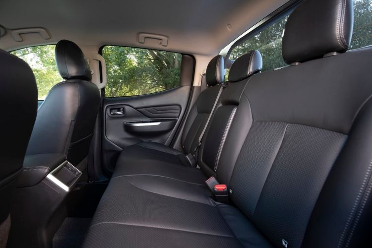
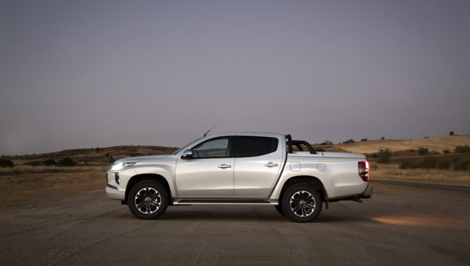

Mitsubishi L200

Características del Mitsubishi L200
La Mitsubishi L200 es una pick-up fabricada por Mitsubishi desde el año 1978. Actualmente se comercializa la sexta generación, consistente en una revisión profunda del L200 de quinta generación donde se mantiene el mismo chasis. La Mitsubishi L200 se caracteriza por ser un coche pensado para el uso profesional, con un diseño y aptitudes claramente 4x4, aunque tras su última revisión mejora en confort y equipamiento para llegar a un público más amplio que busca una herramienta para el ocio fuera de asfalto. La Mitsubishi L200 se fabrica en la factoría de Laem Chabang (Tailandia), comercializándose además bajo otras denominaciones en función del mercado.
Diseño exterior de la Mitsubishi L200
El diseño exterior de la Mitsubishi L200 se carecteriza por un estética robusta cargada de personalidad. Con motivo del rediseño introducido de cara al MY2020 Mitsubishi introdujo una importante revisión del frontal integrando el lenguaje de diseño "Dynamic Shield" visto en otros modelos como el Mitsubishi Eclipse Cross.
Este último rediseño estético afecta a toda la carrocería, ofreciendo además una mayor diferenciación en la gama L200 para las variantes de uso profesional M-PRO y las terminaciones más lujosas destinadas a un público más general. De este modo en las versiones más equipadas es posible encontrar multitud de detalles cromados, llantas de aleación en aluminio de mayor tamaño o diferentes piezas pintadas en el color de la carrocería.
La gama L200 se comercializa en dos variantes: cabina simple con 5.295 mm de longitud de carrocería y 1.850 mm de longitud de caja, y doble cabina con 5.305 mm de longitud de carrocería y 1.550 mm de longitud de caja.